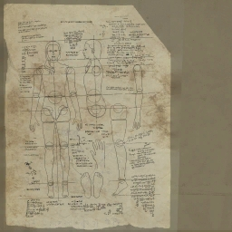
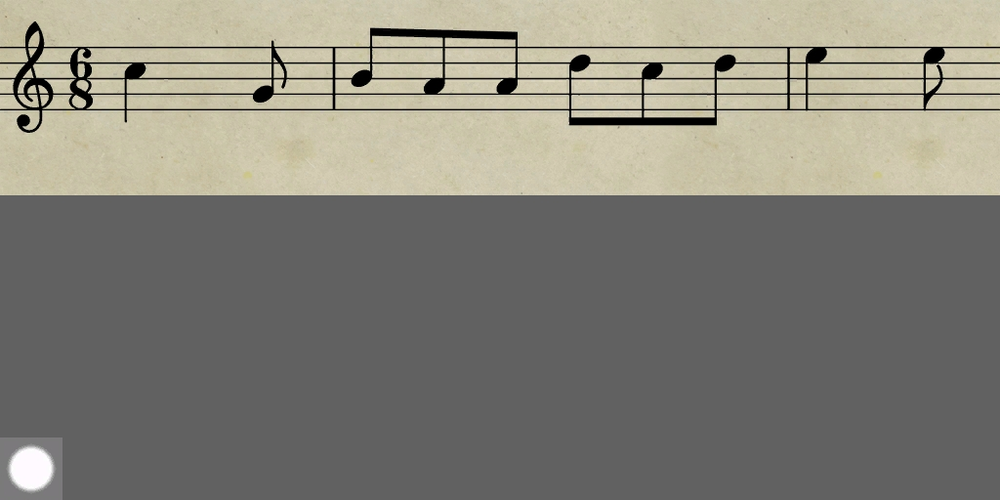
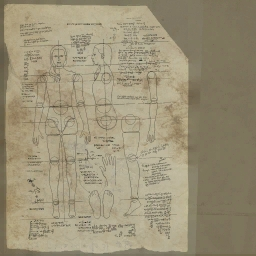
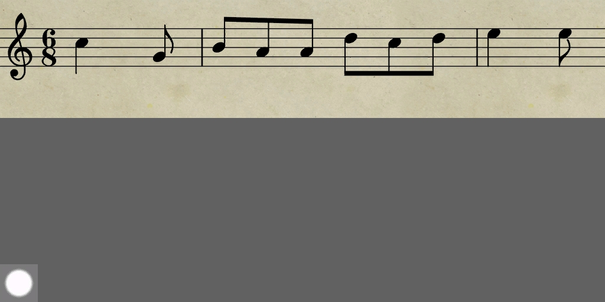
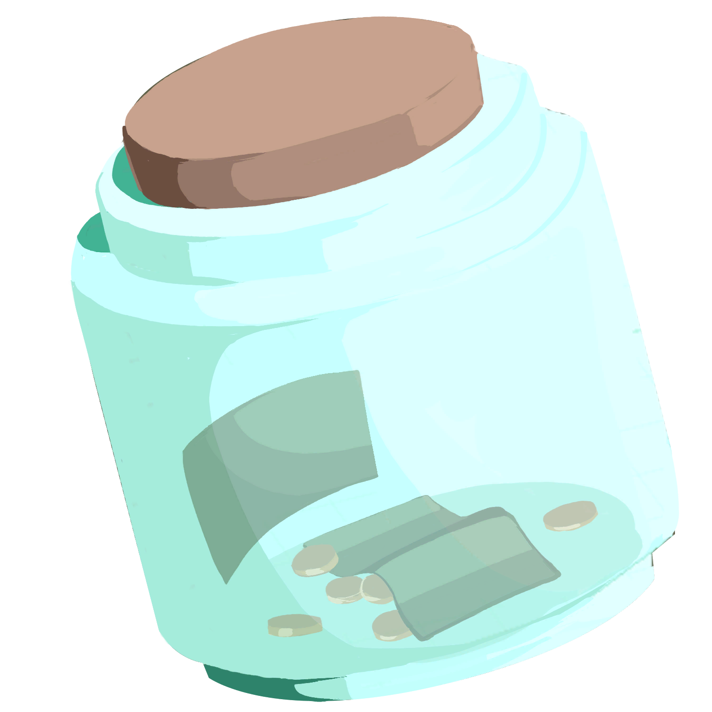
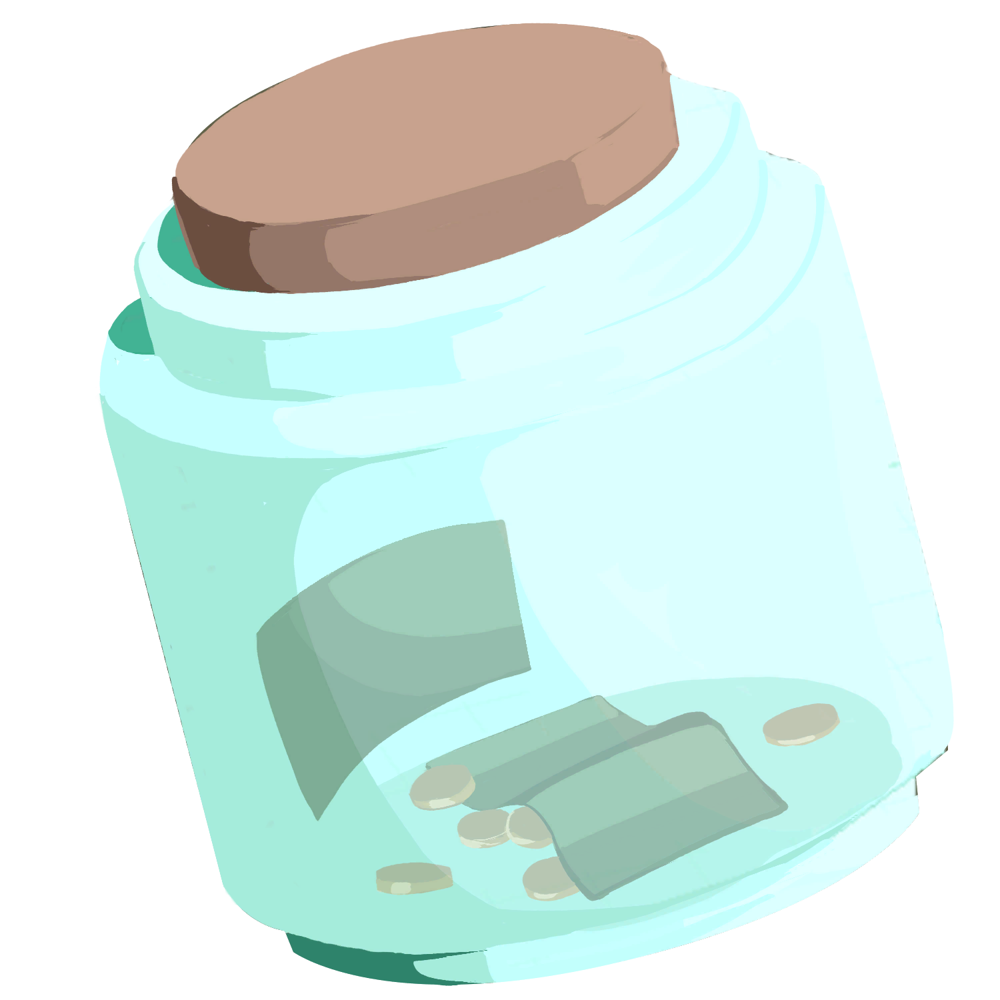
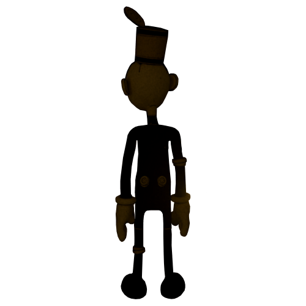
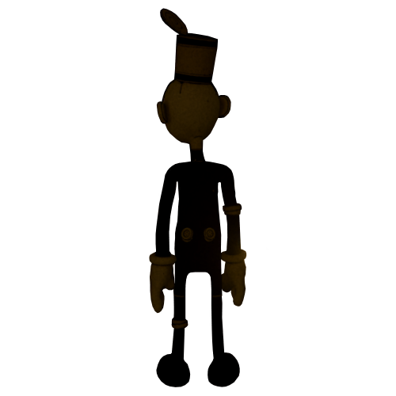

Debugging and modding
I often debug games and search through their files when I'm working on a game-related project or just for fun. I've done this with RE8, where I took textures for my VR project,
with The Were Cleaner,
because I made a fan-animation for it and needed more references, and BSOTM, where I just looked at it for fun, because the game is basically about finding easter eggs.
I'm often interested in the process of game creation and I like to find easter eggs + unused parts of those games.
I've used Unity, Fluffy Mod Manager, REFramework, noesisv439, umodel, etc. for this.
Below are pictures of various things I found in the files of those games.
So far I've modded Beatsaber on the Meta Quest 2 (songs, cubes and various life impovement things) and I've also downloaded a working version of Minecraft to the headset. I enjoy modding games and plan to continue doing so.
RE8:
 



The Were Cleaner:
 

Bendy:
 
